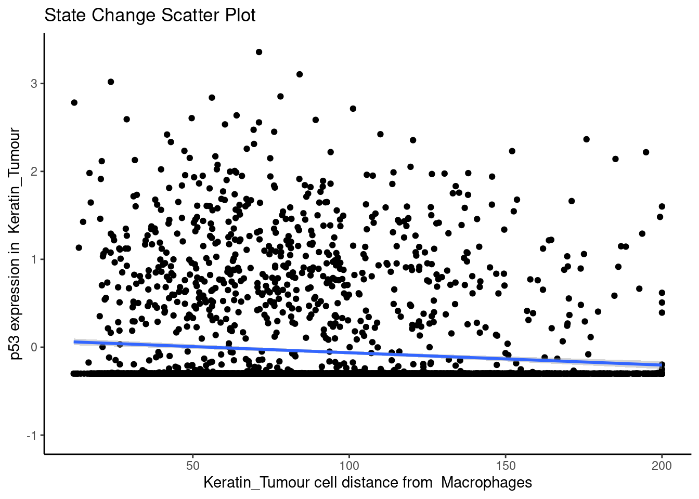
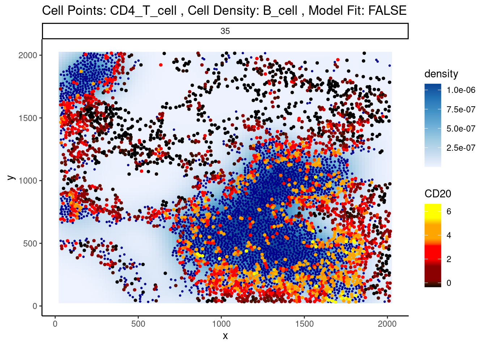

# Loading required packages
library(Statial)
library(spicyR)
library(ClassifyR)
library(lisaClust)
library(dplyr)
library(SingleCellExperiment)
library(ggplot2)
library(ggsurvfit)
library(survival)
library(tibble)
library(treekoR)
devtools::load_all("~/Statial")
theme_set(theme_classic())
nCores <- 86 Marker expression
6.1 Statial: Marker means
One of the easiest things to quantify in terms of markers is a marker mean. For a given image, we assess the total marker mean across all cells within an image, and compare across disease states. We can do this on an image level, a cell type level, a region level, and a cell type within regions level. For example, if your question is: “How does the expression of CD163 in infiltrating macrophages within the tumour spatial domain differ across my 2 treatment groups?”, you’ll want to look at the marker mean of macrophages within specifically the tumour domain.
Statial provides functionality to identify the average marker expression of a given cell type in a given region, using the getMarkerMeans function. Similar to the analysis above, these features can also be used for survival analysis.
cellTypeRegionMeans <- getMarkerMeans(kerenSPE,
imageID = "imageID",
cellType = "cellType",
region = "region"
)
survivalResults <- colTest(cellTypeRegionMeans[names(kerenSurv), ], kerenSurv, type = "survival")
head(survivalResults) coef se.coef pval adjPval
B7H3__CD4_T_cell__region_1 270.0 76.00 0.00038 0.43
CD163__CD4_T_cell__region_1 67.0 19.00 0.00038 0.43
FoxP3__CD4_T_cell__region_1 25.0 7.20 0.00052 0.43
Si__Unidentified__region_2 -3.1 0.89 0.00053 0.43
CD56__CD4_T_cell__region_1 28.0 8.10 0.00067 0.43
Keratin6__Keratin_Tumour__region_3 1.6 0.47 0.00073 0.43
cluster
B7H3__CD4_T_cell__region_1 B7H3__CD4_T_cell__region_1
CD163__CD4_T_cell__region_1 CD163__CD4_T_cell__region_1
FoxP3__CD4_T_cell__region_1 FoxP3__CD4_T_cell__region_1
Si__Unidentified__region_2 Si__Unidentified__region_2
CD56__CD4_T_cell__region_1 CD56__CD4_T_cell__region_1
Keratin6__Keratin_Tumour__region_3 Keratin6__Keratin_Tumour__region_36.2 SpatioMark: Identifying continuous changes in cell state
Changes in cell states can be analytically framed as the change in abundance of a gene or protein within a particular cell type. We can use marker expression to identify and quantify evidence of cell interactions that catalyse cell state changes. This approach measures how protein markers in a cell change with spatial proximity and abundance to other cell types. The methods utilised here will thereby provide a framework to explore how the dynamic behaviour of cells are altered by the agents they are surrounded by.
6.2.1 Continuous cell state changes within a single image
The first step in analysing these changes is to calculate the spatial proximity (getDistances) and abundance (getAbundances) of each cell to every cell type. These values will then be stored in the reducedDims slot of the SingleCellExperiment object under the names distances and abundances respectively.
kerenSPE <- getDistances(kerenSPE,
maxDist = 200,
nCores = 1
)
kerenSPE <- getAbundances(kerenSPE,
r = 200,
nCores = 1
)First, let’s examine the same effect observed earlier with Kontextual - the localisation between p53-positive keratin/tumour cells and macrophages in the context of total keratin/tumour cells for image 6 of the Keren et al. dataset.
Statial provides two main functions to assess this relationship - calcStateChanges and plotStateChanges. We can use calcStateChanges to examine the relationship between 2 cell types for 1 marker in a specific image. In this case, we’re examining the relationship between keratin/tumour cells (from = Keratin_Tumour) and macrophages (to = "Macrophages") for the marker p53 (marker = "p53") in image = "6". We can appreciate that the fdr statistic for this relationship is significant, with a negative tvalue, indicating that the expression of p53 in keratin/tumour cells decreases as distance from macrophages increases.
stateChanges <- calcStateChanges(
cells = kerenSPE,
type = "distances",
image = "6",
from = "Keratin_Tumour",
to = "Macrophages",
marker = "p53",
nCores = 1
)
stateChanges imageID primaryCellType otherCellType marker coef tval
1 6 Keratin_Tumour Macrophages p53 -0.001402178 -7.010113
pval fdr
1 2.868257e-12 2.868257e-12Statial also provides a convenient function for visualising this interaction - plotStateChanges. Here, again we can specify image = 6 and our main cell types of interest, keratin/tumour cells and macrophages, and our marker p53, in the same format as calcStateChanges.
Through this analysis, we can observe that keratin/tumour cells closer to a group of macrophages tend to have higher expression of p53, as observed in the first graph. This relationship is quantified with the second graph, showing an overall decrease of p53 expression in keratin/tumour cells as distance to macrophages increase.
These results allow us to essentially arrive at the same result as Kontextual, which calculated a localisation between p53+ keratin/tumour cells and macrophages in the wider context of keratin/tumour cells.
p <- plotStateChanges(
cells = kerenSPE,
type = "distances",
image = "6",
from = "Keratin_Tumour",
to = "Macrophages",
marker = "p53",
size = 1,
shape = 19,
interactive = FALSE,
plotModelFit = FALSE,
method = "lm"
)
p$image
$scatter`geom_smooth()` using formula = 'y ~ x'
6.2.2 Continuous cell state changes across all images
Beyond looking at single cell-to-cell interactions for a single image, we can also look at all interactions across all images. The calcStateChanges function provided by Statial can be expanded for this exact purpose - by not specifying cell types, a marker, or an image, calcStateChanges will examine the most significant correlations between distance and marker expression across the entire dataset. Here, we’ve filtered out the most significant interactions to only include those found within image 6 of the Keren et al. dataset.
stateChanges <- calcStateChanges(
cells = kerenSPE,
type = "distances",
nCores = 1,
minCells = 100
)
stateChanges |>
filter(imageID == 6) |>
head(n = 10) imageID primaryCellType otherCellType marker coef tval
1 6 Keratin_Tumour Unidentified Na 0.004218419 25.03039
2 6 Keratin_Tumour Macrophages HLA_Class_1 -0.003823497 -24.69629
3 6 Keratin_Tumour CD4_T_cell HLA_Class_1 -0.003582774 -23.87797
4 6 Keratin_Tumour Unidentified Beta.catenin 0.005893120 23.41953
5 6 Keratin_Tumour CD8_T_cell HLA_Class_1 -0.003154544 -23.13804
6 6 Keratin_Tumour DC_or_Mono HLA_Class_1 -0.003353834 -22.98944
7 6 Keratin_Tumour dn_T_CD3 HLA_Class_1 -0.003123446 -22.63197
8 6 Keratin_Tumour Tumour HLA_Class_1 0.003684079 21.94265
9 6 Keratin_Tumour CD4_T_cell Fe -0.003457338 -21.43550
10 6 Keratin_Tumour CD4_T_cell phospho.S6 -0.002892457 -20.50767
pval fdr
1 6.971648e-127 3.382534e-123
2 7.814253e-124 3.430271e-120
3 1.745242e-116 5.362839e-113
4 1.917245e-112 5.523165e-109
5 5.444541e-110 1.434014e-106
6 1.053130e-108 2.696743e-105
7 1.237988e-105 2.889213e-102
8 8.188258e-100 1.640945e-96
9 1.287478e-95 2.260688e-92
10 3.928912e-88 5.748996e-85In image 6, the majority of the top 10 most significant interactions occur between keratin/tumour cells and an immune population, and many of these interactions appear to involve the HLA class I ligand.
We can examine some of these interactions further with the plotStateChanges function. Taking a closer examination of the relationship between macrophages and keratin/tumour HLA class I expression, the plot below shows us a clear visual correlation - as macrophage density increases, keratin/tumour cells increase their expression HLA class I.
Biologically, HLA Class I is a ligand which exists on all nucleated cells, tasked with presenting internal cell antigens for recognition by the immune system, marking aberrant cells for destruction by either CD8+ T cells or NK cells.
p <- plotStateChanges(
cells = kerenSPE,
type = "distances",
image = "6",
from = "Keratin_Tumour",
to = "Macrophages",
marker = "HLA_Class_1",
size = 1,
shape = 19,
interactive = FALSE,
plotModelFit = FALSE,
method = "lm"
)
p$image
$scatter`geom_smooth()` using formula = 'y ~ x'Warning: Removed 1359 rows containing non-finite outside the scale range
(`stat_smooth()`).Warning: Removed 1359 rows containing missing values or values outside the scale range
(`geom_point()`).
Next, let’s take a look at the top 10 most significant results across all images.
stateChanges |> head(n = 10) imageID primaryCellType otherCellType marker coef
69468 37 Endothelial Tumour Lag3 -0.001621517
153135 11 Neutrophils NK CD56 -0.059936866
16402 35 CD4_T_cell B_cell CD20 -0.029185750
16498 35 CD4_T_cell DC_or_Mono CD20 0.019125946
4891 35 B_cell DC_or_Mono phospho.S6 0.005282065
16507 35 CD4_T_cell DC_or_Mono phospho.S6 0.004033218
4885 35 B_cell DC_or_Mono HLA.DR 0.011120703
5043 35 B_cell Other_Immune P 0.011182182
16354 35 CD4_T_cell dn_T_CD3 CD20 0.016349492
4888 35 B_cell DC_or_Mono H3K9ac 0.005096632
tval pval fdr
69468 -4.916884e+14 0.000000e+00 0.000000e+00
153135 -2.172437e+15 0.000000e+00 0.000000e+00
16402 -4.057355e+01 7.019343e-282 4.313854e-277
16498 4.053436e+01 1.891267e-281 8.717324e-277
4891 4.041385e+01 5.306590e-278 1.956752e-273
16507 3.472882e+01 4.519947e-219 1.388904e-214
4885 3.415344e+01 8.401034e-212 2.212712e-207
5043 3.414375e+01 1.056403e-211 2.434613e-207
16354 3.391901e+01 1.219488e-210 2.498188e-206
4888 3.399856e+01 3.266533e-210 6.022506e-206Immediately, we can appreciate that a couple of these interactions are not biologically plausible. One of the most significant interactions occurs between B cells and CD4 T cells in image 35, where CD4 T cells are found to increase in CD20 expression when in close proximity to B cells. Biologically, CD20 is a highly specific ligand for B cells, and under healthy circumstances are usually not expressed in T cells.
Could this potentially be an artefact of calcStateChanges? We can examine the image through the plotStateChanges function, where we indeed observe a strong increase in CD20 expression in T cells nearby B cell populations.
p <- plotStateChanges(
cells = kerenSPE,
type = "distances",
image = "35",
from = "CD4_T_cell",
to = "B_cell",
marker = "CD20",
size = 1,
shape = 19,
interactive = FALSE,
plotModelFit = FALSE,
method = "lm"
)
p$image
$scatter`geom_smooth()` using formula = 'y ~ x'Warning: Removed 26 rows containing missing values or values outside the scale range
(`geom_smooth()`).So why are T cells expressing CD20? This brings us to a key problem of cell segmentation - contamination.
6.2.3 Contamination (Lateral marker spill over)
Contamination, or lateral marker spill over is an issue that results in a cell’s marker expressions being wrongly attributed to another adjacent cell. This issue arises from incorrect segmentation where components of one cell are wrongly determined as belonging to another cell. Alternatively, this issue can arise when antibodies used to tag and measure marker expressions don’t latch on properly to a cell of interest, thereby resulting in residual markers being wrongly assigned as belonging to a cell near the intended target cell. It is important that we either correct or account for this incorrect attribution of markers in our modelling process. This is critical in understanding whether significant cell-cell interactions detected are an artefact of technical measurement errors driven by spill over or are real biological changes that represent a shift in a cell’s state.
To circumvent this problem, Statial provides a function that predicts the probability that a cell is any particular cell type - calcContamination. calcContamination returns a dataframe of probabilities demarcating the chance of a cell being any particular cell type. This dataframe is stored under contaminations in the reducedDim slot of the SingleCellExperiment object. It also provides the rfMainCellProb column, which provides the probability that a cell is indeed the cell type it has been designated. E.g. For a cell designated as CD8, rfMainCellProb could give a 80% chance that the cell is indeed CD8, due to contamination.
We can then introduce these probabilities as covariates into our linear model by setting contamination = TRUE as a parameter in our calcStateChanges function. However, this is not a perfect solution for the issue of contamination. As we can see, despite factoring in contamination into our linear model, the correlation between B cell density and CD20 expression in CD4 T cells remains one of the most significant interactions in our model.
kerenSPE <- calcContamination(kerenSPE)Growing trees.. Progress: 29%. Estimated remaining time: 1 minute, 18 seconds.
Growing trees.. Progress: 58%. Estimated remaining time: 46 seconds.
Growing trees.. Progress: 86%. Estimated remaining time: 15 seconds.stateChangesCorrected <- calcStateChanges(
cells = kerenSPE,
type = "distances",
nCores = 1,
minCells = 100,
contamination = TRUE
)
stateChangesCorrected |> head(n = 20) imageID primaryCellType otherCellType marker coef
69468 37 Endothelial Tumour Lag3 -0.001621517
153135 11 Neutrophils NK CD56 -0.059936866
16402 35 CD4_T_cell B_cell CD20 -0.024571950
16498 35 CD4_T_cell DC_or_Mono CD20 0.015772466
4891 35 B_cell DC_or_Mono phospho.S6 0.004288926
16354 35 CD4_T_cell dn_T_CD3 CD20 0.013457619
16507 35 CD4_T_cell DC_or_Mono phospho.S6 0.003590359
16357 35 CD4_T_cell dn_T_CD3 HLA.DR 0.010261320
89188 3 Keratin_Tumour DC Ca -0.013731753
3697 28 B_cell NK Na -0.004464320
82222 20 Keratin_Tumour Tumour HLA_Class_1 0.002947118
4741 35 B_cell dn_T_CD3 HLA.DR 0.008930978
4885 35 B_cell DC_or_Mono HLA.DR 0.008690646
16491 35 CD4_T_cell DC_or_Mono CSF.1R 0.008649541
82985 21 Keratin_Tumour DC Pan.Keratin -0.005909002
82177 20 Keratin_Tumour Tumour Na 0.002561655
99073 6 Keratin_Tumour Unidentified Na 0.004182679
16363 35 CD4_T_cell dn_T_CD3 phospho.S6 0.002922091
5083 35 B_cell Other_Immune phospho.S6 0.004576803
83998 23 Keratin_Tumour Unidentified HLA_Class_1 0.002986654
tval pval fdr
69468 -2.673408e+14 0.000000e+00 0.000000e+00
153135 -2.188475e+15 0.000000e+00 0.000000e+00
16402 -3.460066e+01 1.589694e-217 9.769731e-213
16498 3.310944e+01 4.106486e-202 1.892782e-197
4891 2.991128e+01 3.031132e-169 1.117700e-164
16354 2.935138e+01 1.235526e-164 3.796565e-160
16507 2.928929e+01 4.925555e-164 1.297321e-159
16357 2.886492e+01 6.026653e-160 1.388917e-155
89188 -2.905981e+01 9.849625e-158 2.017750e-153
3697 -2.901927e+01 1.925888e-157 3.550760e-153
82222 2.585291e+01 1.174098e-134 1.967896e-130
4741 2.614278e+01 5.543870e-134 8.517695e-130
4885 2.516607e+01 2.778189e-125 3.940114e-121
16491 2.503381e+01 1.412595e-124 1.860287e-120
82985 -2.446219e+01 1.641735e-124 2.017912e-120
82177 2.455804e+01 1.054547e-122 1.215168e-118
99073 2.449776e+01 5.455305e-122 5.916439e-118
16363 2.465580e+01 2.994339e-121 3.067035e-117
5083 2.463231e+01 1.298678e-120 1.260197e-116
83998 2.425599e+01 3.349010e-120 3.087285e-116However, this does not mean factoring in contamination into our linear model was ineffective.
Whilst our correction attempts do not rectify every relationship which arises due to contamination, we show that a significant portion of these relationships are rectified. We can show this by plotting a ROC curve of true positives against false positives. In general, cell type specific markers such as CD4, CD8, and CD20 should not change in cells they are not specific to. Therefore, relationships detected to be significant involving these cell type markers are likely false positives and will be treated as such for the purposes of evaluation. Meanwhile, cell state markers are predominantly likely to be true positives.
Plotting the relationship between false positives and true positives, we’d expect the contamination correction to be greatest in the relationships with the top 100 lowest p values, where we indeed see more true positives than false positives with contamination correction.
cellTypeMarkers <- c("CD3", "CD4", "CD8", "CD56", "CD11c", "CD68", "CD45", "CD20")
values <- c("blue", "red")
names(values) <- c("None", "Corrected")
df <- rbind(
data.frame(TP = cumsum(stateChanges$marker %in% cellTypeMarkers), FP = cumsum(!stateChanges$marker %in% cellTypeMarkers), type = "None"),
data.frame(TP = cumsum(stateChangesCorrected$marker %in% cellTypeMarkers), FP = cumsum(!stateChangesCorrected$marker %in% cellTypeMarkers), type = "Corrected")
)
ggplot(df, aes(x = TP, y = FP, colour = type)) +
geom_line() +
labs(y = "Cell state marker", x = "Cell type marker") +
scale_colour_manual(values = values)Here, we zoom in on the ROC curve where the top 100 lowest p values occur, where we indeed see more true positives than false positives with contamination correction.
ggplot(df, aes(x = TP, y = FP, colour = type)) +
geom_line() +
xlim(0, 100) +
ylim(0, 1000) +
labs(y = "Cell state marker", x = "Cell type marker") +
scale_colour_manual(values = values)Warning: Removed 371470 rows containing missing values or values outside the scale range
(`geom_line()`).6.2.4 Associate continuous state changes with survival outcomes
Similiar to Kontextual, we can run a similar survival analysis using our state changes results. Here, prepMatrix extracts the coefficients, or the coef column of stateChanges by default. To use the t values instead, specify column = "tval" in the prepMatrix function.
# Preparing features for Statial
stateMat <- prepMatrix(stateChanges)
# Ensuring rownames of stateMat match up with rownames of the survival vector
stateMat <- stateMat[names(kerenSurv), ]
# Remove some very small values
stateMat <- stateMat[, colMeans(abs(stateMat) > 0.0001) > .8]
survivalResults <- colTest(stateMat, kerenSurv, type = "survival")
head(survivalResults) coef se.coef pval adjPval
Keratin_Tumour__Mono_or_Neu__Pan.Keratin -280 89 0.0018 0.63
Macrophages__Keratin_Tumour__HLA_Class_1 220 75 0.0034 0.63
Keratin_Tumour__CD8_T_cell__Keratin6 -220 77 0.0036 0.63
Macrophages__Other_Immune__HLA_Class_1 -480 170 0.0057 0.75
Keratin_Tumour__Mesenchymal__dsDNA -810 310 0.0094 0.80
Keratin_Tumour__Unidentified__H3K27me3 490 190 0.0100 0.80
cluster
Keratin_Tumour__Mono_or_Neu__Pan.Keratin Keratin_Tumour__Mono_or_Neu__Pan.Keratin
Macrophages__Keratin_Tumour__HLA_Class_1 Macrophages__Keratin_Tumour__HLA_Class_1
Keratin_Tumour__CD8_T_cell__Keratin6 Keratin_Tumour__CD8_T_cell__Keratin6
Macrophages__Other_Immune__HLA_Class_1 Macrophages__Other_Immune__HLA_Class_1
Keratin_Tumour__Mesenchymal__dsDNA Keratin_Tumour__Mesenchymal__dsDNA
Keratin_Tumour__Unidentified__H3K27me3 Keratin_Tumour__Unidentified__H3K27me3For our state changes results, Keratin_Tumour__CD4_Cell__Keratin6 is the most significant pairwise relationship which contributes to patient survival. That is, the relationship between HLA class I expression in keratin/tumour cells and their spatial proximity to mesenchymal cells. As there is a negative coeffcient associated with this relationship, which tells us that higher HLA class I expression in keratin/tumour cells nearby mesenchymal cell populations lead to poorer survival outcomes for patients.
# Selecting the most significant relationship
survRelationship <- stateMat[["Keratin_Tumour__Mono_or_Neu__Pan.Keratin"]]
survRelationship <- ifelse(survRelationship > median(survRelationship), "Higher expression in close cells", "Lower expression in close cells")
# Plotting Kaplan-Meier curve
survfit2(kerenSurv ~ survRelationship) |>
ggsurvfit() +
add_pvalue() +
ggtitle("Keratin_Tumour__Mono_or_Neu__Pan.Keratin")6.3 scFeatures: Moran’s I
6.4 sessionInfo
sessionInfo()R version 4.4.1 (2024-06-14)
Platform: x86_64-pc-linux-gnu
Running under: Debian GNU/Linux 12 (bookworm)
Matrix products: default
BLAS: /usr/lib/x86_64-linux-gnu/openblas-pthread/libblas.so.3
LAPACK: /usr/lib/x86_64-linux-gnu/openblas-pthread/libopenblasp-r0.3.21.so; LAPACK version 3.11.0
locale:
[1] LC_CTYPE=C.UTF-8 LC_NUMERIC=C LC_TIME=C.UTF-8
[4] LC_COLLATE=C.UTF-8 LC_MONETARY=C.UTF-8 LC_MESSAGES=C.UTF-8
[7] LC_PAPER=C.UTF-8 LC_NAME=C LC_ADDRESS=C
[10] LC_TELEPHONE=C LC_MEASUREMENT=C.UTF-8 LC_IDENTIFICATION=C
time zone: Australia/Sydney
tzcode source: system (glibc)
attached base packages:
[1] stats4 stats graphics grDevices utils datasets methods
[8] base
other attached packages:
[1] SpatialDatasets_1.4.0 SpatialExperiment_1.16.0
[3] ExperimentHub_2.14.0 AnnotationHub_3.14.0
[5] BiocFileCache_2.14.0 dbplyr_2.5.0
[7] Statial_1.7.4 testthat_3.2.1.1
[9] treekoR_1.14.0 tibble_3.2.1
[11] ggsurvfit_1.1.0 ggplot2_3.5.1
[13] SingleCellExperiment_1.28.1 dplyr_1.1.4
[15] lisaClust_1.14.4 ClassifyR_3.10.0
[17] survival_3.7-0 BiocParallel_1.40.0
[19] MultiAssayExperiment_1.32.0 SummarizedExperiment_1.36.0
[21] Biobase_2.66.0 GenomicRanges_1.58.0
[23] GenomeInfoDb_1.42.0 IRanges_2.40.0
[25] MatrixGenerics_1.18.0 matrixStats_1.4.1
[27] S4Vectors_0.44.0 BiocGenerics_0.52.0
[29] generics_0.1.3 spicyR_1.18.0
loaded via a namespace (and not attached):
[1] fs_1.6.5 spatstat.sparse_3.1-0
[3] devtools_2.4.5 httr_1.4.7
[5] hopach_2.66.0 RColorBrewer_1.1-3
[7] doParallel_1.0.17 numDeriv_2016.8-1.1
[9] profvis_0.4.0 tools_4.4.1
[11] backports_1.5.0 utf8_1.2.4
[13] R6_2.5.1 lazyeval_0.2.2
[15] mgcv_1.9-1 GetoptLong_1.0.5
[17] urlchecker_1.0.1 withr_3.0.2
[19] coxme_2.2-22 cli_3.6.3
[21] spatstat.explore_3.3-3 sandwich_3.1-1
[23] labeling_0.4.3 mvtnorm_1.3-2
[25] spatstat.data_3.1-2 systemfonts_1.1.0
[27] yulab.utils_0.1.8 ggupset_0.4.0
[29] colorRamps_2.3.4 sessioninfo_1.2.2
[31] limma_3.62.1 RSQLite_2.3.7
[33] flowCore_2.18.0 rstudioapi_0.17.1
[35] gridGraphics_0.5-1 shape_1.4.6.1
[37] spatstat.random_3.3-2 car_3.1-3
[39] scam_1.2-17 Matrix_1.7-1
[41] RProtoBufLib_2.18.0 fansi_1.0.6
[43] abind_1.4-8 lifecycle_1.0.4
[45] yaml_2.3.10 multcomp_1.4-26
[47] edgeR_4.4.0 carData_3.0-5
[49] SparseArray_1.6.0 Rtsne_0.17
[51] blob_1.2.4 grid_4.4.1
[53] promises_1.3.0 crayon_1.5.3
[55] bdsmatrix_1.3-7 miniUI_0.1.1.1
[57] lattice_0.22-6 KEGGREST_1.46.0
[59] magick_2.8.5 pillar_1.9.0
[61] knitr_1.49 ComplexHeatmap_2.22.0
[63] rjson_0.2.23 boot_1.3-31
[65] codetools_0.2-20 glue_1.8.0
[67] ggiraph_0.8.10 ggfun_0.1.7
[69] spatstat.univar_3.1-1 data.table_1.16.2
[71] remotes_2.5.0 vctrs_0.6.5
[73] png_0.1-8 treeio_1.30.0
[75] gtable_0.3.6 cachem_1.1.0
[77] xfun_0.49 S4Arrays_1.6.0
[79] mime_0.12 ConsensusClusterPlus_1.70.0
[81] pheatmap_1.0.12 iterators_1.0.14
[83] cytolib_2.18.0 statmod_1.5.0
[85] ellipsis_0.3.2 TH.data_1.1-2
[87] nlme_3.1-166 usethis_3.0.0
[89] ggtree_3.14.0 bit64_4.5.2
[91] filelock_1.0.3 rprojroot_2.0.4
[93] DBI_1.2.3 colorspace_2.1-1
[95] tidyselect_1.2.1 curl_6.0.1
[97] bit_4.5.0 compiler_4.4.1
[99] diffcyt_1.26.0 desc_1.4.3
[101] DelayedArray_0.32.0 plotly_4.10.4
[103] scales_1.3.0 rappdirs_0.3.3
[105] stringr_1.5.1 digest_0.6.37
[107] goftest_1.2-3 fftwtools_0.9-11
[109] spatstat.utils_3.1-1 minqa_1.2.8
[111] rmarkdown_2.29 XVector_0.46.0
[113] htmltools_0.5.8.1 pkgconfig_2.0.3
[115] lme4_1.1-35.5 fastmap_1.2.0
[117] rlang_1.1.4 GlobalOptions_0.1.2
[119] htmlwidgets_1.6.4 ggthemes_5.1.0
[121] UCSC.utils_1.2.0 shiny_1.9.1
[123] ggh4x_0.2.8 farver_2.1.2
[125] zoo_1.8-12 jsonlite_1.8.9
[127] magrittr_2.0.3 Formula_1.2-5
[129] GenomeInfoDbData_1.2.13 ggplotify_0.1.2
[131] patchwork_1.3.0 munsell_0.5.1
[133] Rcpp_1.0.13-1 ape_5.8
[135] ggnewscale_0.5.0 stringi_1.8.4
[137] brio_1.1.5 zlibbioc_1.52.0
[139] MASS_7.3-61 plyr_1.8.9
[141] pkgbuild_1.4.5 parallel_4.4.1
[143] deldir_2.0-4 Biostrings_2.74.0
[145] splines_4.4.1 tensor_1.5
[147] circlize_0.4.16 locfit_1.5-9.10
[149] igraph_2.1.1 ggpubr_0.6.0
[151] uuid_1.2-1 ranger_0.17.0
[153] spatstat.geom_3.3-3 ggsignif_0.6.4
[155] reshape2_1.4.4 pkgload_1.4.0
[157] BiocVersion_3.20.0 XML_3.99-0.17
[159] evaluate_1.0.1 BiocManager_1.30.25
[161] nloptr_2.1.1 foreach_1.5.2
[163] tweenr_2.0.3 httpuv_1.6.15
[165] tidyr_1.3.1 purrr_1.0.2
[167] polyclip_1.10-7 clue_0.3-66
[169] ggforce_0.4.2 broom_1.0.7
[171] xtable_1.8-4 tidytree_0.4.6
[173] rstatix_0.7.2 later_1.3.2
[175] viridisLite_0.4.2 class_7.3-22
[177] lmerTest_3.1-3 aplot_0.2.3
[179] AnnotationDbi_1.68.0 memoise_2.0.1
[181] FlowSOM_2.14.0 cluster_2.1.6
[183] concaveman_1.1.0